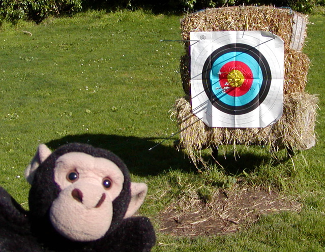
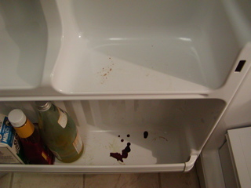
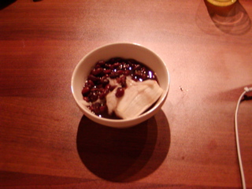
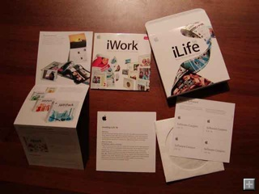

ベガスシュートに向け着々と準備を。
予約したのはココ
Circus Circus という遊園地がテーマの？ホテルで、ベガスシュートを開催するリビエラホテルの向かいにあります。
ホテルや飛行機の予約はやっぱ Yahoo! Travel が楽チンで安いです。
http://travel.yahoo.com/
去年も使ったので住所とか改めて入力する必要がなかったのも良い。
{kind=link}
Tiger インストール以来、導入を見合わせていたけど先日ついに出た。
"Slow cooked to Perfection"、だそうで。
前のバージョンからの無償アップグレードのオファーがあったのでこりゃ使わない手がないでしょうということで導入。
前も迷ったけど、Safari でダウンロードしたファイルを "Finderで表示"とかができない。
これはちょこちょこっと Path Finder のパッケージをいじればいいんだけど毎回忘れてしまうのでメモ。
Why doesn't clicking on a folder in the Dock show up in Path Finder?
パッケージの中にある、Contents以下の "PkgInfo"ファイルの中身を“FNDRMACS”と書き換えて再起動。
たいした手間じゃないけどアップデートのたびにやるのがチョット面倒。
Finderと完璧に置き換えてしまう強烈な技もあるけども、安定度を見極めてから・・・。
I’d like to replace Apple’s Finder with Path Finder. Is that possible?
<td nowrap="true"> は効かないらしい。<td nowrap>はOk
・エンコーディングの指定
JEditorPane.setContentType() で指定しておく。
なぜか meta タグにエンコーディングを記載しておくとレンダリングしてくれず真っ白になってしまう。
幾つか事例は見つかったけど詳細は未調査。
・クラスパス内の画像の表示
ClassPathURLStreamHandler 的なものを作ろうとしたけどなんとか手間を省けないかと考えた。
---------
String baseurl = 画像と同じクラスローダで読み込まれるはずのクラス.class.getProtectionDomain().getCodeSource().getLocation().toString();
if(baseurl.endsWith(".jar")){
baseurl = "jar:"+baseurl+"!/";
}
で baseurl を取得しておいて
<img src="${baseurl}com/mypackage/picture.gif">
---------
といった感じ。jar ファイルからクラスが読み込まれているときだけ JarURLConnectionを使わせるってこと。
これで画像が jar ファイルにあってもクラスパス内に展開されていても表示できる。

JEditorPaneにクラスパスに配置されてる画像を表示したとこ
#Tabel / Thread Dump / Sequence の左側に配置されてるやつ
Tiger インストール以来、導入を見合わせていたけど先日ついに出た。
"Slow cooked to Perfection"、だそうで。
前のバージョンからの無償アップグレードのオファーがあったのでこりゃ使わない手がないでしょうということで導入。
前も迷ったけど、Safari でダウンロードしたファイルを "Finderで表示"とかができない。
これはちょこちょこっと Path Finder のパッケージをいじればいいんだけど毎回忘れてしまうのでメモ。
Why doesn't clicking on a folder in the Dock show up in Path Finder?
パッケージの中にある、Contents以下の "PkgInfo"ファイルの中身を“FNDRMACS”と書き換えて再起動。
たいした手間じゃないけどアップデートのたびにやるのがチョット面倒。
Finderと完璧に置き換えてしまう強烈な技もあるけども、安定度を見極めてから・・・。
I’d like to replace Apple’s Finder with Path Finder. Is that possible?
<td nowrap="true"> は効かないらしい。<td nowrap>はOk
・エンコーディングの指定
JEditorPane.setContentType() で指定しておく。
なぜか meta タグにエンコーディングを記載しておくとレンダリングしてくれず真っ白になってしまう。
幾つか事例は見つかったけど詳細は未調査。
・クラスパス内の画像の表示
ClassPathURLStreamHandler 的なものを作ろうとしたけどなんとか手間を省けないかと考えた。
---------
String baseurl = 画像と同じクラスローダで読み込まれるはずのクラス.class.getProtectionDomain().getCodeSource().getLocation().toString();
if(baseurl.endsWith(".jar")){
baseurl = "jar:"+baseurl+"!/";
}
で baseurl を取得しておいて
<img src="${baseurl}com/mypackage/picture.gif">
---------
といった感じ。jar ファイルからクラスが読み込まれているときだけ JarURLConnectionを使わせるってこと。
これで画像が jar ファイルにあってもクラスパス内に展開されていても表示できる。
JEditorPaneにクラスパスに配置されてる画像を表示したとこ
#Tabel / Thread Dump / Sequence の左側に配置されてるやつ
Javaコードから Velocity のテンプレートに移植する際、変数の参照に全て $ を付けるのを忘れないように。
特にメソッド呼出がネストしているときに忘れやすい。
・変数名は Java コードと同じにすべし
Java で statistic という変数名だったのをテンプレート内では stats という変数名で扱っていてちょっと混乱した。
・Context のチェーンの動作
Context をラップして、セットした場合、inner context には値はセットされない。
不変の変数は inner context にセットしておくべし。
ただし、Map を引数にして Context を生成した場合、セットした変数は全部そのMapに格納される。
ちょっとクセのある動作なので注意。
Context Chaining
どうしたらスレッドダンプの解析結果を見やすく表示できるか模索中

・dev2dev > Advisories and Notifications
http://dev2dev.bea.com/advisoriesnotifications/
日本語はまだ。
・dev2dev Home > リソース > セキュリティアドバイザリ
http://www.beasys.co.jp/dev2dev/resourcelibrary/advisoriesnotifications/
追記:日本語版もでました
Javaコードから Velocity のテンプレートに移植する際、変数の参照に全て $ を付けるのを忘れないように。
特にメソッド呼出がネストしているときに忘れやすい。
・変数名は Java コードと同じにすべし
Java で statistic という変数名だったのをテンプレート内では stats という変数名で扱っていてちょっと混乱した。
・Context のチェーンの動作
Context をラップして、セットした場合、inner context には値はセットされない。
不変の変数は inner context にセットしておくべし。
ただし、Map を引数にして Context を生成した場合、セットした変数は全部そのMapに格納される。
ちょっとクセのある動作なので注意。
Context Chaining
どうしたらスレッドダンプの解析結果を見やすく表示できるか模索中
・dev2dev > Advisories and Notifications
http://dev2dev.bea.com/advisoriesnotifications/
日本語はまだ。
・dev2dev Home > リソース > セキュリティアドバイザリ
http://www.beasys.co.jp/dev2dev/resourcelibrary/advisoriesnotifications/
追記:日本語版もでました
夕方にいったためか、広大なフィールドをほぼ貸し切り状態！
今週は距離表示のあるレーンでうてたので、50mと30mを織り交ぜて148本。
だいぶまともに当たるようになってきました。

ちんぱんとアーチェリー場

30mならまぁ金には入る

帰りは太平洋が夕日に染まってました
現在のところjava.text.MessageFormatで無理矢理HTMLを構築する仕組み。
HTMLのレイアウトに沿ってJavaでゴリゴリとコードが書いてあるので、非常に美しくないです。
レイアウトに変更があったら Java コードを書き換えないといけないのは非常にメンテナンスしづらい！
HTMLを作るならJSPでしょ、って思うけど侍は当然サーブレットコンテナを搭載していないので無理。Jetty を内蔵してごにょごにょ、っていう手もあるけどそれはまた今度。
というわけでちょっと Velocity を触ってみました。
Jakarta Velocity
いまさら説明する必要はないかもしれないけど Velocity はテンプレートエンジン。HTMLなり自動送信するメール文面なりをJavaアプリケーション内でJavaコーディングレスで生成するというもの。
使い方は非常に簡単。ドキュメントも明快なので特に迷うことはなかったです。
とりあえずバイナリをダウンロードしてきて velocity-dep-1.4.jar をクラスパスに通すだけ。これには依存しているライブラリが全部入っていて505kb。
ちょっとサイズが問題になる場合はvelocity-1.4.jar と commons-collections だけでも動く。といっても150kbくらいしか節約できないけど。
Javaからどのように Velocity を呼び出すかは developer guide を、テンプレートの書式についてはuser guideを見れば良い。
書式についてコマカーイ話は VTL referenceを。
テンプレートにエラーがあった場合、パース時に例外が発生するけれども NullPointerException とかで意味不明。
こんなときはデフォルトでカレントディレクトリに書き出される velocity.log を見ればよい。
侍で読み込ませておけば Ok ね。
今回ちょっと迷ったのは以下の二点。
1. オブジェクトの null チェックは？
#if ($変数名) で判別可能。オブジェクトが null でなければ true と同等に判定される。JavaScript と同じね。
2. foreach 内でインデックスを取得するには？
#set ($i = 0)
#foreach .....
処理
#set ($i = $i + 1)
#end
とかやっても良いけど実は $velocityCount という変数が自動的に内部でアサインされる。
デフォルトではインデックスは１から始まるので注意。設定で0から始まるようにもできるらしいけど今回は必要なかった。
正確には計っていないけど全くといって良いほどパフォーマンス低下はなかった。
同時にいままでhtmlをファイルに一旦書き出していたのをやめて JEditorPane に直接セットするようにしたのでむしろパフォーマンス向上！
というわけで次のアップデートでは Velocity が含まれるのでサイズが倍くらいになる予定。といっても600〜700k程度ですが。
去年なんて自宅サーバが落ちて５分後くらいに見知らぬガイジンからメールが来ました。
------
Subject: Please send me Samurai
I cannot access your web site, please send me samurai zip file.
Thanks,
- XXXX
------
うーん、なんてチェックの早いヤツ！！！
侍は Java Web Start アプリケーションだからサーバ落ちてても起動はできるはず。
ってことは初めて使う人かな？
でも何で私のメールアドレス知ってるんだろう、とかナゾです。Googleのキャッシュ？
Mac OSX で動かしているので今時 OS 自体がイカれて飛んでしまうことはないですが、 AirMac とかケーブルモデムの調子が悪くなって繋がらなくなることが残念ながら数ヶ月から半年に一度くらいあります。
まぁ一旦ACアダプタ抜いてリセットかければ繋がるようになるんだけど。
サーバ用の機器を使ってるわけではない(サーバ向けの機器だって壊れますが)のでハードウェアのトラブルはしょうがないけど、今回やってしまいました、遠く離れたサンフランシスコからヒューマンエラーを！
先のエントリにある VNC over SSH でいくつか OS X のセキュリティアップデートをかけてやり、再起動をかけたらなんとつながらない！！
VNC どころか SSH でも繋がらないし・・・。
うーん、再起動じゃなくてシャットダウンを選んでしまったかな？
自分専用のファイルサーバだったら別に我慢すれば良い話だけれども、最近またオレンジニュースで紹介していただいたり、VersionTrackerに登録したりで特に侍のアクセスが増えているので気になってしょうがない。
急遽日本にいる義理の父(って表現あんまり好きでないですが)にメンテナンスをお願いしました。
Mac は起動していたみたいだけど、再起動してみたら復旧したとのこと。
シャットダウン中になんらかのGUIアプリケーションがシャットダウンをキャンセルしてしまったんではないかと思われる。うーん、気をつけよう。
雪の中メンテナンスありがとうございました！！！
次回出張があったらサーバも持ってくるかなぁ・・・。やっぱり Mac mini?
夕方にいったためか、広大なフィールドをほぼ貸し切り状態！
今週は距離表示のあるレーンでうてたので、50mと30mを織り交ぜて148本。
だいぶまともに当たるようになってきました。
ちんぱんとアーチェリー場
30mならまぁ金には入る
帰りは太平洋が夕日に染まってました
現在のところjava.text.MessageFormatで無理矢理HTMLを構築する仕組み。
HTMLのレイアウトに沿ってJavaでゴリゴリとコードが書いてあるので、非常に美しくないです。
レイアウトに変更があったら Java コードを書き換えないといけないのは非常にメンテナンスしづらい！
HTMLを作るならJSPでしょ、って思うけど侍は当然サーブレットコンテナを搭載していないので無理。Jetty を内蔵してごにょごにょ、っていう手もあるけどそれはまた今度。
というわけでちょっと Velocity を触ってみました。
Jakarta Velocity
いまさら説明する必要はないかもしれないけど Velocity はテンプレートエンジン。HTMLなり自動送信するメール文面なりをJavaアプリケーション内でJavaコーディングレスで生成するというもの。
使い方は非常に簡単。ドキュメントも明快なので特に迷うことはなかったです。
とりあえずバイナリをダウンロードしてきて velocity-dep-1.4.jar をクラスパスに通すだけ。これには依存しているライブラリが全部入っていて505kb。
ちょっとサイズが問題になる場合はvelocity-1.4.jar と commons-collections だけでも動く。といっても150kbくらいしか節約できないけど。
Javaからどのように Velocity を呼び出すかは developer guide を、テンプレートの書式についてはuser guideを見れば良い。
書式についてコマカーイ話は VTL referenceを。
テンプレートにエラーがあった場合、パース時に例外が発生するけれども NullPointerException とかで意味不明。
こんなときはデフォルトでカレントディレクトリに書き出される velocity.log を見ればよい。
侍で読み込ませておけば Ok ね。
今回ちょっと迷ったのは以下の二点。
1. オブジェクトの null チェックは？
#if ($変数名) で判別可能。オブジェクトが null でなければ true と同等に判定される。JavaScript と同じね。
2. foreach 内でインデックスを取得するには？
#set ($i = 0)
#foreach .....
処理
#set ($i = $i + 1)
#end
とかやっても良いけど実は $velocityCount という変数が自動的に内部でアサインされる。
デフォルトではインデックスは１から始まるので注意。設定で0から始まるようにもできるらしいけど今回は必要なかった。
正確には計っていないけど全くといって良いほどパフォーマンス低下はなかった。
同時にいままでhtmlをファイルに一旦書き出していたのをやめて JEditorPane に直接セットするようにしたのでむしろパフォーマンス向上！
というわけで次のアップデートでは Velocity が含まれるのでサイズが倍くらいになる予定。といっても600〜700k程度ですが。
1/23 typo をやや修正。
去年なんて自宅サーバが落ちて５分後くらいに見知らぬガイジンからメールが来ました。
------
Subject: Please send me Samurai
I cannot access your web site, please send me samurai zip file.
Thanks,
- XXXX
------
うーん、なんてチェックの早いヤツ！！！
侍は Java Web Start アプリケーションだからサーバ落ちてても起動はできるはず。
ってことは初めて使う人かな？
でも何で私のメールアドレス知ってるんだろう、とかナゾです。Googleのキャッシュ？
Mac OSX で動かしているので今時 OS 自体がイカれて飛んでしまうことはないですが、 AirMac とかケーブルモデムの調子が悪くなって繋がらなくなることが残念ながら数ヶ月から半年に一度くらいあります。
まぁ一旦ACアダプタ抜いてリセットかければ繋がるようになるんだけど。
サーバ用の機器を使ってるわけではない(サーバ向けの機器だって壊れますが)のでハードウェアのトラブルはしょうがないけど、今回やってしまいました、遠く離れたサンフランシスコからヒューマンエラーを！
先のエントリにある VNC over SSH でいくつか OS X のセキュリティアップデートをかけてやり、再起動をかけたらなんとつながらない！！
VNC どころか SSH でも繋がらないし・・・。
うーん、再起動じゃなくてシャットダウンを選んでしまったかな？
自分専用のファイルサーバだったら別に我慢すれば良い話だけれども、最近またオレンジニュースで紹介していただいたり、VersionTrackerに登録したりで特に侍のアクセスが増えているので気になってしょうがない。
急遽日本にいる義理の父(って表現あんまり好きでないですが)にメンテナンスをお願いしました。
Mac は起動していたみたいだけど、再起動してみたら復旧したとのこと。
シャットダウン中になんらかのGUIアプリケーションがシャットダウンをキャンセルしてしまったんではないかと思われる。うーん、気をつけよう。
雪の中メンテナンスありがとうございました！！！
次回出張があったらサーバも持ってくるかなぁ・・・。やっぱり Mac mini?
$ ssh -L 5900:127.0.0.1:5900 接続ホスト
2. 向こう側で OSXVncを起動する
$ open /Applications/OSXVnc.app
3. こちら側で 127.0.0.1:5900 に接続
以上
BEA Weblogic Server 9.1
AquaLogic Service Bus 2.1
・BEA WebLogic Server® 9.1 ドキュメント
http://edocs.beasys.co.jp/e-docs/wls/docs91/index.html
・WebLogic Server 9.1 の新機能
http://edocs.beasys.co.jp/e-docs/wls/docs91/notes/new.html
WLS9.0 からの差分はこちら。かなり多くの問題が修正されていることが分かる。
・WebLogic Server に関する確認済みおよび解決済みの問題
http://edocs.beasys.co.jp/e-docs/wls/docs91/issues/known_resolved.html
BEA Weblogic Server 9.1
AquaLogic Service Bus 2.1
・BEA WebLogic Server® 9.1 ドキュメント
http://edocs.beasys.co.jp/e-docs/wls/docs91/index.html
・WebLogic Server 9.1 の新機能
http://edocs.beasys.co.jp/e-docs/wls/docs91/notes/new.html
WLS9.0 からの差分はこちら。かなり多くの問題が修正されていることが分かる。
・WebLogic Server に関する確認済みおよび解決済みの問題
http://edocs.beasys.co.jp/e-docs/wls/docs91/issues/known_resolved.html
新日鉄ソリューションズが深夜残業、休日出勤を全面禁止
SIer はサービス残業、タクシーで帰宅、休日出勤が日常的に行われている風土ですからなんとも素晴らしい試みです。
優秀な人材の確保や、業務効率の向上に大きな効果がありそう。
規則が形骸化してしまわないよう努力して是非業界全体に広めてもらいたいところ。
ちなみに私の会社では、今いるサンフランシスコのオフィスでは１６時くらいには人がポロポロ帰り初めて、17:30にはほとんどみんな退社してしまいます。
日本人は仕事一辺倒の生活からスペアタイムを充実させる方向へとシフトしてゆとりのある人生を送るべき！
「早く帰るのはデキるヤツだ」という空気を作りましょう！
食べられる方。
全くの初心者なのでまずは Safeway で簡単！との触れ込みでうってるチョコチップの入ったクッキーミックスを買ってきました。
1. 混ぜる
卵、バターと粉をまぜる。
バターは softened but not melted なのを使えという微妙な表現。どういう意味だろ？
構わずレンジで溶かしてから混ぜてしまいました。

2. 並べる
買ってきてあるクッキングシートを広げて・・・あれ、どっちが表だろ？
くっつかないようにするための物だからたぶんツルツルしてるほうだろう、と思うけど裏表違いがわからない！
特に説明書きもないからどっちでもいいんでしょう。
こんなの常識なんだろうけどもやったことないとわかりません。

3. 焼く
ウチのオーブンには "bake" と "broil" の２つのモードがある。broil だと上側が、bakeだと下側が熱くなるらしい。
今回プレート２枚、上下に並ぶことになってしまったので bake 5分、 broil 5分 で半分ずつで焼いてみることに。
・・・
いや、間違いでした。上段がコゲコゲ。
broilで上から焼くのは強すぎるみたい。
下段はキレイにやけた。

4. 食べる
えーと、サラダと高野豆腐とお茶漬けを食べた後なのであんまり食べる気しません。
すんごーく甘い香り。
以前はプリペイド携帯は音声通話+SMSだけのシンプルなサービスできたが最近はカメラ付きやテレビ電話機能付き、MP3(?)再生機能付きなど通常の携帯にひけをとらないサービスが展開されてます。
匿名携帯電話による犯罪がどうこうとか心配してもしょうがないレベルなのでしょう(?)
でも観光客とか短期滞在者のニーズを考えるとうれしいことです。
どの会社も「no contract!」(契約なし)を合い言葉にしていて、購入に身分証明書やサインを求められることはありません。
ビザのない観光客でもメキシコから国境を越えてやってきた社会保障番号のない不法移民でも簡単に使えます。

侍2.0.4
2.0からの変更点
・JRockit1.4.2_08のverbosegcログに対応
いつからかわからないけど verbosegc ログのフォーマットが微妙に変わっていた。
ふと要望が聞こえて来たので急遽対応！
・検索機能のパフォーマンスを最適化
特に前方検索がひどい実装で大きなログだと半ばフリーズしたようになっていたのを大幅に改善。
ドキュメントのサイズに関わらず素早く検索できます。
・検索フィールドを追加
Ctrl+FまたはCmd+Fで現れます。従来通りインクリメンタルサーチも可。
・ドラッグイベントへの視覚的フィードバックを追加
ドロップする場所によって、新しいタブでファイルを読み込むのか、今アクティブなタブで読み込むのかわかりやすくなった。
・CSVファイルでマルチバイトのタイトルが文字化けしていたのを修正
とりあえずシステムのエンコーディング決めうちだけど。
・-Xloggc/-XX:+PrintGCTimeStamps オプションで出力されたGCログの解析に対応
HP-JVMの-Xverbosegcの対応はまだ。
・タブの切り替えショートカットを追加
Ctrl+←/→または Cmd+←/→で切り替え可能。
起動はこちらから ->

(要JDK1.4以降)
BEA WebLogic Server 6.1 and WebLogic jDriver 6.1 End-of-Life (EOL)
サポート終了は 2006年11月14日。
サポート延長契約をすれば 2 年間さらにサポートしてくれるとのこと。
超高速なブートや使いやすい管理コンソール、堅牢で安定した動作と WLS5.1 に並ぶ名作なだけに残念。
JDK1.3.1 の EOL に伴う流れなのでしょうがないけど。
無難かつ平穏にアップグレードするならば WLS8.1(6.1と同じくJ2EE1.3ベース)へ、ノンストップデプロイメントなど派手に新機能を使いたければ WLS9.x(J2EE1.4ベース) へのアップグレードがオススメ。
WLS8.1 > WebLogic Server 6.x からバージョン 8.1 へのアップグレード
WLS9.1 > Upgrading WebLogic Application Environments
以前はプリペイド携帯は音声通話+SMSだけのシンプルなサービスできたが最近はカメラ付きやテレビ電話機能付き、MP3(?)再生機能付きなど通常の携帯にひけをとらないサービスが展開されてます。
匿名携帯電話による犯罪がどうこうとか心配してもしょうがないレベルなのでしょう(?)
でも観光客とか短期滞在者のニーズを考えるとうれしいことです。
どの会社も「no contract!」(契約なし)を合い言葉にしていて、購入に身分証明書やサインを求められることはありません。
ビザのない観光客でもメキシコから国境を越えてやってきた社会保障番号のない不法移民でも簡単に使えます。
侍2.0.4
2.0からの変更点
・JRockit1.4.2_08のverbosegcログに対応
いつからかわからないけど verbosegc ログのフォーマットが微妙に変わっていた。
ふと要望が聞こえて来たので急遽対応！
・検索機能のパフォーマンスを最適化
特に前方検索がひどい実装で大きなログだと半ばフリーズしたようになっていたのを大幅に改善。
ドキュメントのサイズに関わらず素早く検索できます。
・検索フィールドを追加
Ctrl+FまたはCmd+Fで現れます。従来通りインクリメンタルサーチも可。
・ドラッグイベントへの視覚的フィードバックを追加
ドロップする場所によって、新しいタブでファイルを読み込むのか、今アクティブなタブで読み込むのかわかりやすくなった。
・CSVファイルでマルチバイトのタイトルが文字化けしていたのを修正
とりあえずシステムのエンコーディング決めうちだけど。
・-Xloggc/-XX:+PrintGCTimeStamps オプションで出力されたGCログの解析に対応
HP-JVMの-Xverbosegcの対応はまだ。
・タブの切り替えショートカットを追加
Ctrl+←/→または Cmd+←/→で切り替え可能。
起動はこちらから ->
(要JDK1.4以降)
Google Mapではここ。
ひしゃげた台形の下の方に箸が二本転がっているようなとこがアーチェリー場。
今日は良い天気でアーチェリー場は大盛況。久しぶりの練習でちょっと体が鈍いけれども一応146本射ってきた。

ここのアーチェリー場では珍しくオリンピックスタイルでうっている人がいた。
ターゲットマットが欲しいんだけど良いアーチェリー場はないかと聞けば、パシフィックアーチェリーが良いだろう、とのこと。
280号沿いのどこかにあるらしい。細かいdirectionを聞いたけどまともに聞き取れず。あとでGoogle Mapsで調べよう。
そこでは$10くらいでインドアで練習ができるらしい。雨の日には良いかも。
今日はレンタカーでGolden Gate Parkのアーチェリー場へ行ってきました。
バスでも行けるところなんだけど、「一人でいる間に右側通行に慣れておけ」との指令があるので。
Golden Gate Park のアーチェリー場は
Google Mapではここ。
ひしゃげた平行四辺形の下の方に箸が二本転がっているようなとこがアーチェリー場です。
今日は良い天気でアーチェリー場は大盛況。久しぶりの練習でちょっと体が鈍いけれども一応146本射ってきました。
ここのアーチェリー場はベアボウとコンパウンドボウのアーチャーが多いんですが、今日は珍しくオリンピックスタイルでうっている人がいました。
ターゲットマットが欲しいんだけど良いアーチェリー場はないかと聞けば、パシフィックアーチェリーが良いだろう、とのこと。
280号沿いのどこかにあるらしい。細かいdirectionを聞いたけどまともに聞き取れず。あとでGoogle Mapsで調べよう。
そこでは$10くらいでインドアで練習ができるらしい。雨の日には良いかも。

Google Mapではここ。
ひしゃげた台形の下の方に箸が二本転がっているようなとこがアーチェリー場。
今日は良い天気でアーチェリー場は大盛況。久しぶりの練習でちょっと体が鈍いけれども一応146本射ってきた。
ここのアーチェリー場では珍しくオリンピックスタイルでうっている人がいた。
ターゲットマットが欲しいんだけど良いアーチェリー場はないかと聞けば、パシフィックアーチェリーが良いだろう、とのこと。
280号沿いのどこかにあるらしい。細かいdirectionを聞いたけどまともに聞き取れず。あとでGoogle Mapsで調べよう。
そこでは$10くらいでインドアで練習ができるらしい。雨の日には良いかも。
冷蔵庫の上：
なにやらスーパーのビニール袋が散乱してる！
どけたらホコリだらけ！フキフキしました。
洗面所：
鏡、蛇口を拭いてピカピカに。
コミ箱がなにかとホコリやら水気やらで汚れがこびりついていたので洗って窓際に放置。
バスタブ：
まだシミが気になるところを漂白。
蛇口を拭いてピカピカに。
オーブン：
扉の外側は油まみれ、内側は細かい汚れが良く焼けてこびりついてる。
がんばってこそぎとった。

家事のデキル亭主を目指してまだまだがんばります。
冷蔵庫の上：
なにやらスーパーのビニール袋が散乱してる！
どけたらホコリだらけ！フキフキしました。
洗面所：
鏡、蛇口を拭いてピカピカに。
コミ箱がなにかとホコリやら水気やらで汚れがこびりついていたので洗って窓際に放置。
バスタブ：
まだシミが気になるところを漂白。
蛇口を拭いてピカピカに。
オーブン：
扉の外側は油まみれ、内側は細かい汚れが良く焼けてこびりついてる。
がんばってこそぎとった。
家事のデキル亭主を目指してまだまだがんばります。
あと一週間ほどで彼女が来るので、それまでに受け入れられる程度にしておきたいと思います。
・床
カーペットであんまゴミとかホコリとかの存在は確認できません。
一応初日に掃除機かけた。また週末にかけます。
・風呂
シャワーカーテンを漂白
バスタブをごしごし。落ちない汚れは漂白。
・冷蔵庫
細かいゴミを取り除くいてふき掃除。
誰ですか！？醤油こぼしたままにしたのは！！

あと、いつの時代からあるかわからない干からびてカチンカチンになったブルーベリーが一粒落ちてました。
・コーヒーメーカー
出来る限り分解してゴシゴシ。
分解しきれず届かないところは綿棒でゴシゴシ。
落ちない汚れは漂白。
・電子レンジ
こびりついた汚れはレモンをチンすれば簡単に落ちるってテレビで見たなー。しかもちょうど良くしなびたレモンが冷蔵庫にある！RIOナイス！
チンッ♪ ゴシゴシ。
む、なかなか良い感じに汚れがとれました。
・シンク
シンクは洗剤がこびりついていつのまにかくすんでしまいます。
たぶん去年ヨメさんが持ってきたと思われる激落ちスポンジでゴシゴシピカッ！
さすがドイツの発明品。良く落ちます。
・コンロ周り
蚊取り線香みたいなやつの周りにある輪っかを外して洗う。
去年は「そこまで掃除するか！？！？」と思ってましたが今では普通となった自分がいます。
なんと油汚れがついていることか！！
あとコンロテーブル全体を中性洗剤をひたしたキッチンペーパーでゴシゴシ。ぬれぞうきんでゴシゴシ。
だいぶキレイになったかな？
1月11日は鏡開きだ！ってことで昨日JapanTownへ行って餅とレトルトのお汁粉を買ってきました。
がっ、モチを焼こうとしたらアルミホイルがないことに気がついて昨日は断念しました。
今日はちゃんとアルミホイルを買ってきて一人でお汁粉を楽しんでます。
日本時間ではすでに２日遅れの鏡開きですが。

さて、時差ぼけも収まって調子出てきたんで体を動かそうか。
去年滞在中はたまの土日くらいしか練習してなかったのでひどく体が鈍ってしまった。
今年はしっかり近射をしたい。
どれがいいかなー
Bass Pro shop
あと一週間ほどで彼女が来るので、それまでに受け入れられる程度にしておきたいと思います。
・床
カーペットであんまゴミとかホコリとかの存在は確認できません。
一応初日に掃除機かけた。また週末にかけます。
・風呂
シャワーカーテンを漂白
バスタブをごしごし。落ちない汚れは漂白。
・冷蔵庫
細かいゴミを取り除くいてふき掃除。
誰ですか！？醤油こぼしたままにしたのは！！
{kind=link}
あと、いつの時代からあるかわからない干からびてカチンカチンになったブルーベリーが一粒落ちてました。
・コーヒーメーカー
出来る限り分解してゴシゴシ。
分解しきれず届かないところは綿棒でゴシゴシ。
落ちない汚れは漂白。
・電子レンジ
こびりついた汚れはレモンをチンすれば簡単に落ちるってテレビで見たなー。しかもちょうど良くしなびたレモンが冷蔵庫にある！RIOナイス！
チンッ♪ ゴシゴシ。
む、なかなか良い感じに汚れがとれました。
・シンク
シンクは洗剤がこびりついていつのまにかくすんでしまいます。
たぶん去年ヨメさんが持ってきたと思われる激落ちスポンジでゴシゴシピカッ！
さすがドイツの発明品。良く落ちます。
・コンロ周り
蚊取り線香みたいなやつの周りにある輪っかを外して洗う。
去年は「そこまで掃除するか！？！？」と思ってましたが今では普通となった自分がいます。
なんと油汚れがついていることか！！
あとコンロテーブル全体を中性洗剤をひたしたキッチンペーパーでゴシゴシ。ぬれぞうきんでゴシゴシ。
だいぶキレイになったかな？
がっ、モチを焼こうとしたらアルミホイルがないことに気がついて昨日は断念。
今日はちゃんとアルミホイルを買ってきて一人でお汁粉を楽しんでます。
日本時間ではすでに２日遅れの鏡開きですが。
OK。
[ファイル>フォルダに公開]でローカルの好きな場所に書き出せる。
2. .Macにブログを公開してコメントやトラックバックはできるのか？
できない！iWebが静的なhtmlやRSSを書き出すだけ。URLは
http://web.mac.com/アカウント名/iWeb/ になる。
3. .Mac以外のスペースにブログを公開してコメントやトラックバックはできるのか？
.Macでできないくらいなんだから当然できない。
4. .Mac以外のスペースにFTPやSFTP、WebDAVでブログ、ポッドキャスト等をアップロードできるのか？
できない。ローカルに書き出した物を手動でアップロードする必要あり。
というわけでiWebはかなりかなりかなりシンプルなアプリケーションです。
Appleデザインなだけあってそれなりにキレイなサイトが作れるのは良い。
DnDで軽快にデザインできたり、iLifeアプリと連携して簡単に手元にあるメディアを呼び出せたりするのはさすが、といったところ。
今回試しに作ってみたのはこれ↓
http://web.mac.com/yusuke/iWeb/
{kind=link}
日本語のリソースが入っているか分からないけど少なくともマルチバイトは通るでしょう？と英語パッケージを見切り発車で購入。パッケージでiLifeを買うのはなんだかんだ初めてかな？
しかしMacWorld開催中なのでサンフランシスコのアップルストアはめちゃめちゃ混んでた。普段から混んでるけど。
お目当てはiWeb。

{kind=link}
今回からパッケージはものすごく小さくなった
OK。
[ファイル>フォルダに公開]でローカルの好きな場所に書き出せる。
2. .Macにブログを公開してコメントやトラックバックはできるのか？
できない！iWebが静的なhtmlやRSSを書き出すだけ。URLは
http://web.mac.com/アカウント名/iWeb/ になる。
3. .Mac以外のスペースにブログを公開してコメントやトラックバックはできるのか？
.Macでできないくらいなんだから当然できない。
4. .Mac以外のスペースにFTPやSFTP、WebDAVでブログ、ポッドキャスト等をアップロードできるのか？
できない。ローカルに書き出した物を手動でアップロードする必要あり。
というわけでiWebはかなりかなりかなりシンプルなアプリケーションです。
Appleデザインなだけあってそれなりにキレイなサイトが作れるのは良い。
DnDで軽快にデザインできたり、iLifeアプリと連携して簡単に手元にあるメディアを呼び出せたりするのはさすが、といったところ。
今回試しに作ってみたのはこれ↓
http://web.mac.com/yusuke/iWeb/
1)intel iMac が即日販売
intel inside シールはなさそう
「２倍のスピード。感動も２倍に」
今まで浮動小数演算で比較していたのを整数演算で比較するというトリック？
2)MacBook Pro
PowerPC じゃなくなったので Power を外したらしい。
#PowerPCになる前からPowerBook、PowerMac だったけど？？
「４倍のスピード。ついに願いは現実に」
・iSight、FrontRow対応、Apple Remoteコントローラ付属
自然な流れ
・MagSafe コネクタ
足を引っかけてもラップトップが机から落ちることがない、磁石で吸着してる電源ケーブル。これはいい！
ACアダプタが正方形だったのが微妙に縦長になってる。
・重さは2.54kg
変わらない、っていうか現行よりちょっと重め？
・高さは2.59cm
薄くなるって噂ありましたが。ちょっと残念。
・FireWireポートは400Mbpsが１基
800Mbpsのポートは静かに削除・・・。
・モデムは別売り
大抵のホテルではEthernetかワイヤレスが装備されるようになったけど、ちょっと不安だなぁ・・・
・バッテリーがリチウムポリマーに
リチウムイオンと比べてどんな特性の違いがあるのかしら？
アパートがMacWorldを開催しているモスコーニュセンターのすぐ近くなので今日はなんだか人が多い！
近所のスターバックスではPowerBookをいじっている人が５人くらい！
さて、今年はどんな新製品が飛び出すんだろうか？
あちこち探したらオンラインフォームがあったので登録しました。
http://www.nfaa-archery.org/tournaments/vegas/registration.cfm
さて、泊まるところはどうしようか。ベガスシュートを開催しているリビエラだと１泊$94だそうだ。
http://www.nfaa-archery.org/tournaments/vegas/hotelInfo.cfm
うーん、トーナメント参加者のための"special rate"だとかいってるけど高くない？リビエラってそんな特別ゴージャスでもないし。
向かいのサーカス・サーカスに泊まろうかどうか迷うとこ。
でもやっぱ会場と同じ建物に泊まれるのが楽かなぁ・・。
侍2.0
・複数ファイルのモニタに対応
タブ表示または上下/左右に並べて表示できる。
・「最近のファイルを開く」機能を追加
そもそもあって然るべき機能です。
・Mac OS X環境でアプリケーションメニューに対応
aboutメニュー、環境設定がアプリケーションメニューから呼び出せるようになった。
・CSVファイルのグラフ化は拡張子が".csv"のファイルの場合のみ働くようになった
GCログをかませた場合などCSVファイルと勘違いしてグラフ化してしまうことがあったので。
・存在しないスレッドがテーブル表示で黒く表示されるようになった
今まで白く表示されていたので、running状態のスレッドと区別がつかなかった。
・Matrix モードを追加
あの興奮をもう一度！ログが黒字に緑色で流れるのはかなり良いです。Neoがスクリーンの向こう側で飛んでいるのが見える。
起動はこちらから ->
(要JDK1.4以降)

上のペインでCSVファイルを監視しているとこ。下のペインはMatrixモードでスレッドダンプとGCログを含むログファイルを監視しているとこ。
スレッドダンプはブロックされまくりのひどい状態。
タブ表示するにあたって、閉じるためのボタンを配置したかったんだけど、JTabbedPaneにそんな機能はなかった。
手頃な既製品も見あたらなかったので車輪から作ったら恐ろしいほど手間がかかった。

まぁ手間に見合ったぶんキレイにできたかな？
3つ以上のペインを上下左右に並べて表示するのはJTabbedPane をネストして無理矢理表現。みかけはそんなに変わってないけど相当手間暇かかってるのでなんとなく2.0とした。
だいぶリファクタリングが進んで中身が整理されてきたので今後の機能追加は楽になると思う。
SpringやVelocityを使ってもっと楽をしたいな。